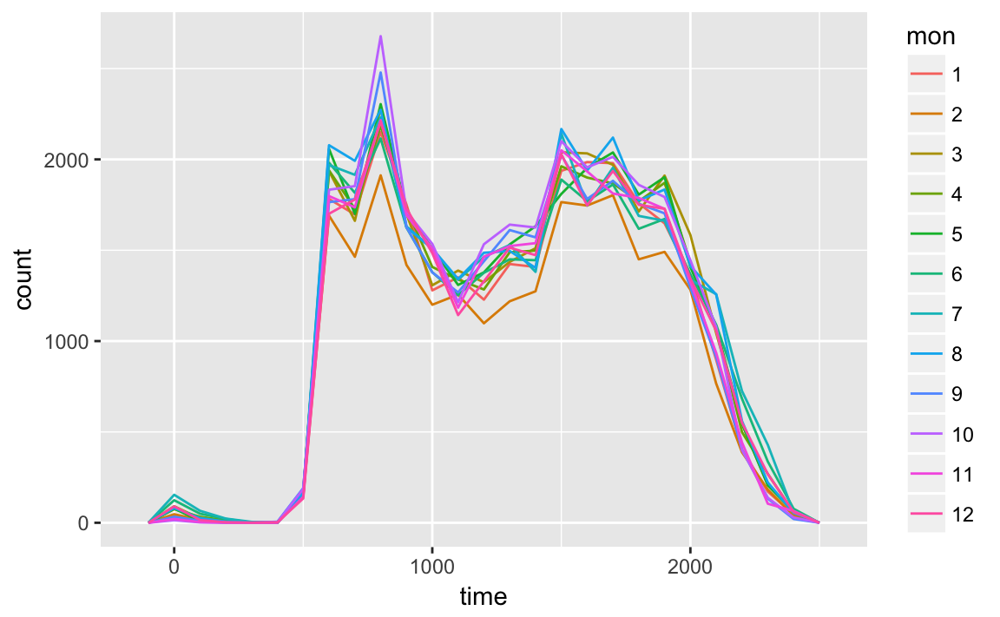
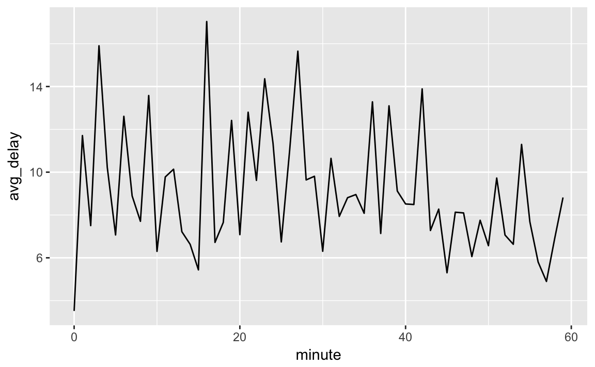
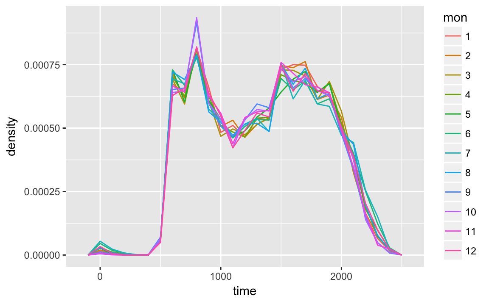
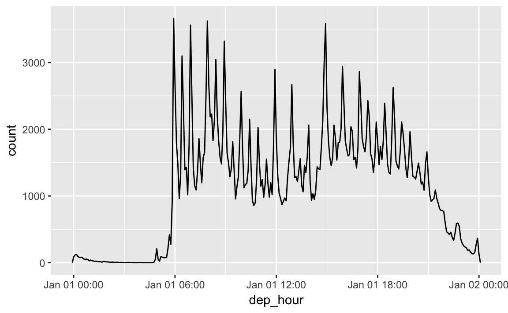
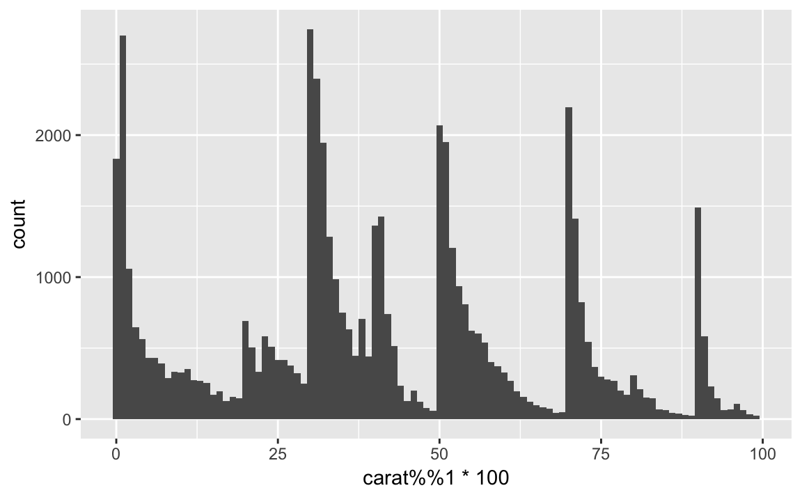
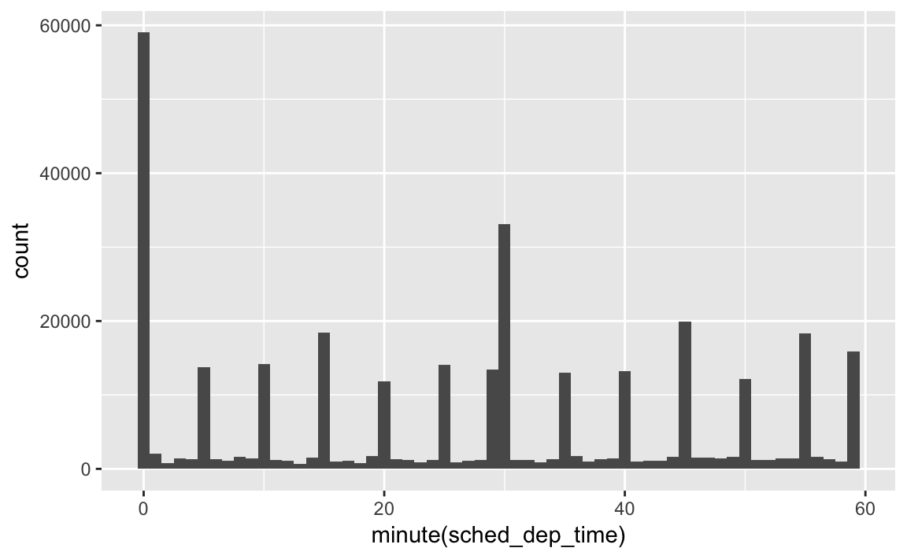
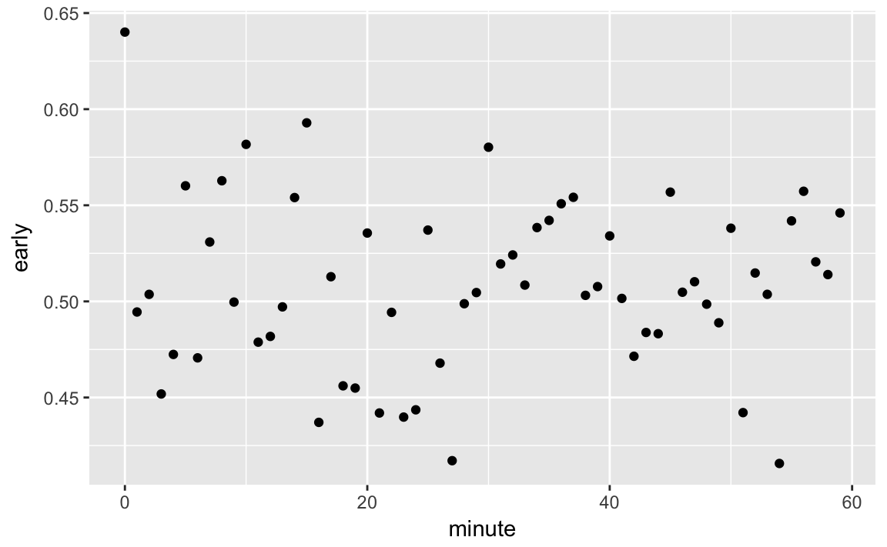

16 Dates and times
16.1 Introduction
16.2 Creating date/times
This code is needed by exercises.
make_datetime_100 <- function(year, month, day, time) {
make_datetime(year, month, day, time %/% 100, time %% 100)
}
flights_dt <- flights %>%
filter(!is.na(dep_time), !is.na(arr_time)) %>%
mutate(
dep_time = make_datetime_100(year, month, day, dep_time),
arr_time = make_datetime_100(year, month, day, arr_time),
sched_dep_time = make_datetime_100(year, month, day, sched_dep_time),
sched_arr_time = make_datetime_100(year, month, day, sched_arr_time)
) %>%
select(origin, dest, ends_with("delay"), ends_with("time"))Exercise 16.2.1
What happens if you parse a string that contains invalid dates?
ret <- ymd(c("2010-10-10", "bananas"))
#> Warning: 1 failed to parse.
print(class(ret))
#> [1] "Date"
ret
#> [1] "2010-10-10" NAIt produces an NA and an warning message.
Exercise 16.2.2
What does the tzone argument to today() do? Why is it important?
It determines the time-zone of the date. Since different time-zones can have different dates, the value of today() can vary depending on the time-zone specified.
Exercise 16.2.3
Use the appropriate lubridate function to parse each of the following dates:
16.3 Date-Time Components
The following code from the chapter is used
sched_dep <- flights_dt %>%
mutate(minute = minute(sched_dep_time)) %>%
group_by(minute) %>%
summarise(
avg_delay = mean(arr_delay, na.rm = TRUE),
n = n())In the previous code, the difference between rounded and un-rounded dates provides the within-period time.
Exercise 16.3.1
How does the distribution of flight times within a day change over the course of the year?
Let’s try plotting this by month:
flights_dt %>%
mutate(time = hour(dep_time) * 100 + minute(dep_time),
mon = as.factor(month
(dep_time))) %>%
ggplot(aes(x = time, group = mon, colour = mon)) +
geom_freqpoly(binwidth = 100)
This will look better if everything is normalized within groups. The reason that February is lower is that there are fewer days and thus fewer flights.
flights_dt %>%
mutate(time = hour(dep_time) * 100 + minute(dep_time),
mon = as.factor(month
(dep_time))) %>%
ggplot(aes(x = time, y = ..density.., group = mon, colour = mon)) +
geom_freqpoly(binwidth = 100)
At least to me there doesn’t appear to much difference in within-day distribution over the year, but I maybe thinking about it incorrectly.
Exercise 16.3.2
Compare dep_time, sched_dep_time and dep_delay. Are they consistent? Explain your findings.
If they are consistent, then dep_time = sched_dep_time + dep_delay.
flights_dt %>%
mutate(dep_time_ = sched_dep_time + dep_delay * 60) %>%
filter(dep_time_ != dep_time) %>%
select(dep_time_, dep_time, sched_dep_time, dep_delay)
#> # A tibble: 1,205 x 4
#> dep_time_ dep_time sched_dep_time dep_delay
#> <dttm> <dttm> <dttm> <dbl>
#> 1 2013-01-02 08:48:00 2013-01-01 08:48:00 2013-01-01 18:35:00 853
#> 2 2013-01-03 00:42:00 2013-01-02 00:42:00 2013-01-02 23:59:00 43
#> 3 2013-01-03 01:26:00 2013-01-02 01:26:00 2013-01-02 22:50:00 156
#> 4 2013-01-04 00:32:00 2013-01-03 00:32:00 2013-01-03 23:59:00 33
#> 5 2013-01-04 00:50:00 2013-01-03 00:50:00 2013-01-03 21:45:00 185
#> 6 2013-01-04 02:35:00 2013-01-03 02:35:00 2013-01-03 23:59:00 156
#> # ... with 1,199 more rowsThere exist discrepancies. It looks like there are mistakes in the dates. These are flights in which the actual departure time is on the next day relative to the scheduled departure time. We forgot to account for this when creating the date-times. The code would have had to check if the departure time is less than the scheduled departure time. Alternatively, simply adding the delay time is more robust because it will automatically account for crossing into the next day.
Exercise 16.3.3
Compare air_time with the duration between the departure and arrival. Explain your findings.
flights_dt %>%
mutate(flight_duration = as.numeric(arr_time - dep_time),
air_time_mins = air_time,
diff = flight_duration - air_time_mins) %>%
select(origin, dest, flight_duration, air_time_mins, diff)
#> # A tibble: 328,063 x 5
#> origin dest flight_duration air_time_mins diff
#> <chr> <chr> <dbl> <dbl> <dbl>
#> 1 EWR IAH 193 227 -34
#> 2 LGA IAH 197 227 -30
#> 3 JFK MIA 221 160 61
#> 4 JFK BQN 260 183 77
#> 5 LGA ATL 138 116 22
#> 6 EWR ORD 106 150 -44
#> # ... with 3.281e+05 more rowsExercise 16.3.4
How does the average delay time change over the course of a day? Should you use dep_time or sched_dep_time? Why?
Use sched_dep_time because that is the relevant metric for someone scheduling a flight. Also, using dep_time will always bias delays to later in the day since delays will push flights later.
flights_dt %>%
mutate(sched_dep_hour = hour(sched_dep_time)) %>%
group_by(sched_dep_hour) %>%
summarise(dep_delay = mean(dep_delay)) %>%
ggplot(aes(y = dep_delay, x = sched_dep_hour)) +
geom_point() +
geom_smooth()
#> `geom_smooth()` using method = 'loess' and formula 'y ~ x'
Exercise 16.3.5
On what day of the week should you leave if you want to minimize the chance of a delay?
Sunday has the lowest average departure delay time and the lowest average arrival delay time.
flights_dt %>%
mutate(dow = wday(sched_dep_time)) %>%
group_by(dow) %>%
summarise(dep_delay = mean(dep_delay),
arr_delay = mean(arr_delay, na.rm = TRUE))
#> # A tibble: 7 x 3
#> dow dep_delay arr_delay
#> <dbl> <dbl> <dbl>
#> 1 1 11.5 4.82
#> 2 2 14.7 9.65
#> 3 3 10.6 5.39
#> 4 4 11.7 7.05
#> 5 5 16.1 11.7
#> 6 6 14.7 9.07
#> # ... with 1 more rowExercise 16.3.6
What makes the distribution of diamonds$carat and flights$sched_dep_time similar?

In both carat and sched_dep_time there are abnormally large numbers of values are at nice “human” numbers. In sched_dep_time it is at 00 and 30 minutes. In carats, it is at 0, 1/3, 1/2, 2/3,

In scheduled departure times it is 00 and 30 minutes, and minutes ending in 0 and 5.
Exercise 16.3.7
Confirm my hypothesis that the early departures of flights in minutes 20-30 and 50-60 are caused by scheduled flights that leave early. Hint: create a binary variable that tells you whether or not a flight was delayed.
At the minute level, there doesn’t appear to be anything:
flights_dt %>%
mutate(early = dep_delay < 0,
minute = minute(sched_dep_time)) %>%
group_by(minute) %>%
summarise(early = mean(early)) %>%
ggplot(aes(x = minute, y = early)) +
geom_point()
But if grouped in 10 minute intervals, there is a higher proportion of early flights during those minutes.
flights_dt %>%
mutate(early = dep_delay < 0,
minute = minute(sched_dep_time) %% 10) %>%
group_by(minute) %>%
summarise(early = mean(early)) %>%
ggplot(aes(x = minute, y = early)) +
geom_point()
16.4 Time Spans
Exercise 16.4.1
Why is there months() but no dmonths()?
There is no direct unambiguous value of months in seconds since months have differing numbers of days.
- 31 days: January, March, May, July, August, October
- 30 days: April, June, September, November, December
- 28 or 29 days: February
Though in the past, in the pre-computer era, for arithmetic convenience, bankers adopted a 360 day year with 30 day months.
Exercise 16.4.2
Explain days(overnight * 1) to someone who has just started learning R. How does it work?
The variable overnight is equal to TRUE or FALSE.
If it is an overnight flight, this becomes 1 day, and if not, then overnight = 0, and no days are added to the date.
Exercise 16.4.3
Create a vector of dates giving the first day of every month in 2015. Create a vector of dates giving the first day of every month in the current year.
A vector of the first day of the month for every month in 2015:
ymd("2015-01-01") + months(0:11)
#> [1] "2015-01-01" "2015-02-01" "2015-03-01" "2015-04-01" "2015-05-01"
#> [6] "2015-06-01" "2015-07-01" "2015-08-01" "2015-09-01" "2015-10-01"
#> [11] "2015-11-01" "2015-12-01"To get the vector of the first day of the month for this year, we first need to figure out what this year is, and get January 1st of it.
I can do that by taking today() and truncating it to the year using floor_date():
Exercise 16.4.4
Write a function that given your birthday (as a date), returns how old you are in years.
Exercise 16.4.5
Why can’t (today() %--% (today() + years(1)) / months(1) work?
It appears to work. Today is a date. Today + 1 year is a valid endpoint for an interval. And months is period that is defined in this period.
16.5 Time Zones
No exercises.